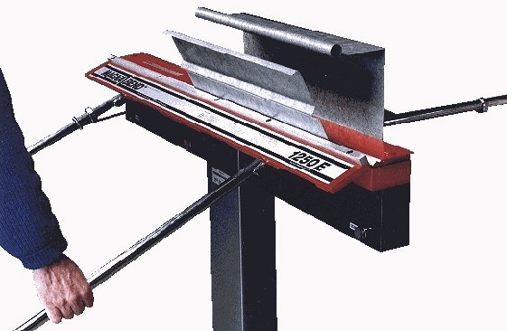

Jdc-bend™ is a new concept in sheetmetal forming which gives you much more freedom to make the shapes you want. The machine is very different from ordinary folders because it clamps the workpiece with a powerful electro-magnet rather than by mechanical means. This leads to numerous advantages.

Machine Makers Pty. Ltd.
14 Monomeeth Drive
Mitcham, Victoria, 3132
Australia
Phone: +61 3 9874 4155Fax: +61 3 9874 4855
E-mail: info@Jdc-bend.com
HANLEY CONSTRUCTION (ZHAN ZHOU) TECHNOLOGY CO., LTD.
59 Hubin Bei Road, Zhongxin Huiyang Bldg
12F-A,B
Xiamen, Fujian, China 361000
Phone: +86 592-5116811
Mobile: +86 18006969545
Sales E-mail: info@Jdc-bend.com
After Service E-mail: afterservice@Jdc-bend.com